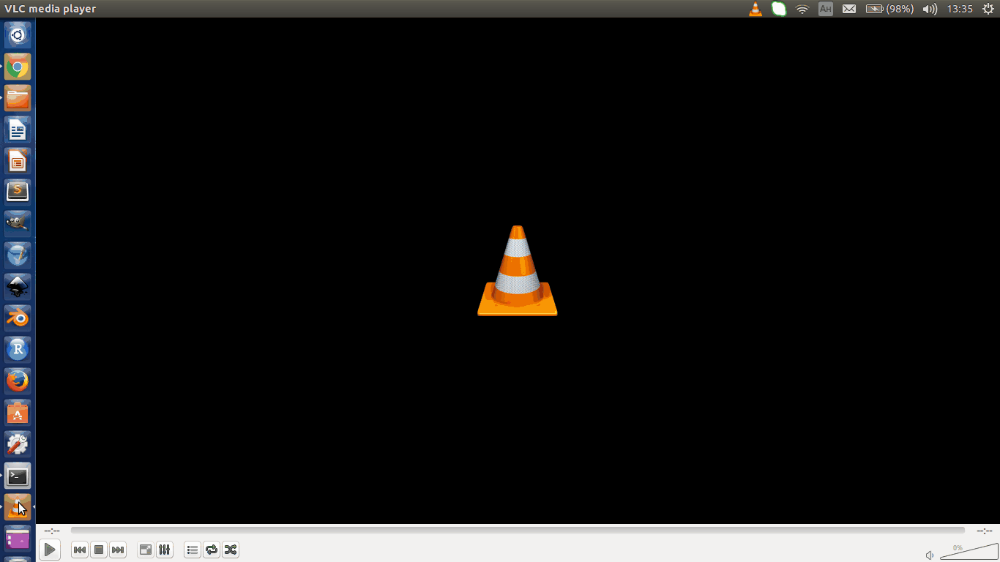

ОБУЧЕНИЕ НА РАБОТНОТО МЯСТО
Видео презентации
Когато си мислим за обучения, си представяме, че това би отнело много време на по- старшия служител. Но какво, ако ви кажа, че не е необходимо човекът, който обучавате да присъства. Да, истина е!
Разбира се доколко ще е полезно е в зависимост от вида работа.
Най- вероятно обучението във вашата организация се извършва пред някакъв вид екран. И решението идва лесно. Трябва ви програма за запис на екрана наричана screencast, screen recording или capturing. Така докато вършите своята си работа, подготвяте учебни материали за новите служители.
Обикновено видео обученията са направени за суха материя (правила, фирмена организация), но защо да се възползвате от предимствата на медията за конкретни действия, изпълнявани на поста. Някои записват и звук, и образ от уеб камерата на компютъра ви.
Може да намерите такива програми из интернет, но може би вече имате инсталирана програма, която върши тази работа. Обикновено VLC се ползва за гледане на видео клипчета. Но програмата има и функционалност за записването им.
Отидете в менюто "Медия" (Media), после изберете "Конвертиране/ Запис" (Convert/ Save). Цъкнете на последното табче "Устройсто за захващане" (Capture device) и изберете Десктоп от падащото меню.
Увеличете "Желаната честота на кадри за захващане" (Desired frame rate for the capture), защото една няма да ви даде гладко изображение. Както знаете за филми това число е 24 (или 25 за любителите на конспирациите), но за нашите цели и петнадесетина ще е достатъчно; зависи колко е мощен компютъра ви и дали имате място.
След това натиснете "Конвертиране/ Запис" (Convert/ Save). В секцията АДРЕС (Destination), натинете "Преглед" (Browse), идете в папката, където искате да запазите записа и напишете желаното име. Изберете бутона "Стартиране" (Start) и воала- вече записвате! Когато всичко е готово, цъкнете квадратния бутон за спиране.
Ако все пак решите да ползвате друга програмка, внимавайте при инсталацията да не инсталирате много излишни плъгини.
Звук може да запишете на смартфона си, тъй като вече почти всички имат такава функция.
Ако нямате микрофон, някои модели слушалки могат поне малко да подобрят записания звук. Или просто намерете тихо помещение и говорете близо да вградения микрофон.
И остава само да комбинирате двете.
В Windows може да ползвате Movie Maker, който често е вече инсталиран с операционната система, iMovie или Quicktime, ако сте на Mac, или OpenShot за линукс машини. Как да го направите разберете като потърсите уроци в youtube или в интернет изобщо. Тези програмки не са толкова сложни като професионалния софтуер, така че не би следвало да ви се опре.
А когато имаме такава ситуация, където дори несъвършените обучения са високо ценени, не е нужно чак такова качество. Със сигурност вашите нови служители ще са облекчени и благодарни за ценното знание, така че няма да се вглеждат в малки грешки и пропуски. Смело напред и успех!